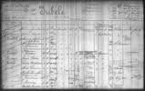
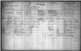
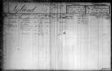

Gegevens, opgemaakt uit gezinskaarten uit het Gemeentearchief Amsterdam.
| 30-7-1874 Martinus Plijter geboren in Purmerend. | 8-10-1882 Geertruida Joosten* geboren in Deventer. | 17-6-1882 Johannes Jacobus Jubels geboren in Amsterdam. | 14-12-1880 Maria Sophia Jurgens geboren in Amsterdam. |
| Geertruida Joosten krijgt in een eerder huwelijk drie dochters, geboren in Deventer en een zoon, Hermanus Johannes Nijland, geboren op 8-8-1908 in Styrum, Duitsland. Zijn nationaliteit is wel Nederlands. |
28-12-1904 Johannes Jacobus Jubels (diamant toestel versteller*) huwt Maria Sophia Jurgens en zijn vertrekken op 22-12-1909 van Hilversum naar Amsterdam. 12-8-1910 Bertha Cornelia Jubels geboren in Amsterdam.  | ||
|
19-4-1928 Martinus Plijter (los werkman) huwt Geertruida Joosten en zij vertrekken op 25-10-1928 van Deventer naar Amsterdam. 5-1-1930 Martinus Plijter overlijdt.  | |||
|
11-4-1935* Hermanus Johannes Nijland (kabelmaker*) huwt Bertha Cornelia Jubels.  | |||
De met een * aangemerkte gegevens konden niet met zekerheid uit de gezinskaarten worden opgemaakt.
Gezinskaarten bleven tot 1939 in gebruik. Zie ook de handleiding gezinskaarten.
Stuur opmerkingen, verbeteringen en uitbreidingen naar Edwin Martin <edwin@bitstorm.org>.
{kind=link}
{kind=link}
{kind=link}